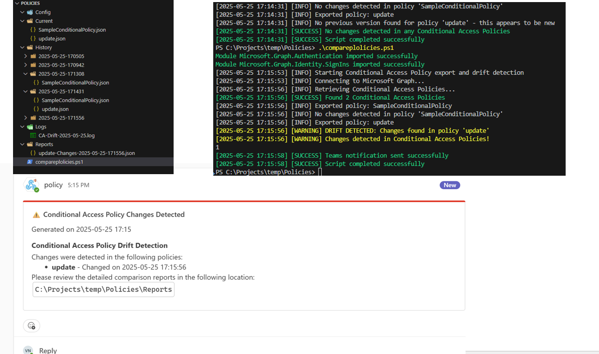

Export & Compare Conditional-Access Policies (drift-detect)
Summary
This script automates the export and comparison of Conditional Access Policies within an Azure AD tenant to detect configuration drift. It helps monitor changes to these critical security controls over time, ensuring they remain compliant with your organization's zero-trust baselines.
The script performs the following operations:
- Authenticates to Microsoft Graph API
- Exports all Conditional Access Policies to JSON format
- Saves each policy with timestamps to establish a version history
- Compares current policies to the previous export
- Generates alerts for any detected changes
- Optionally sends notifications via email or Microsoft Teams

Prerequisites
- Microsoft Graph PowerShell SDK modules installed
- Permissions to read Conditional Access Policies (Application or delegated)
- Required permissions:
Policy.Read.Allfor reading Conditional Access PoliciesMail.Send(optional for email notifications)- Teams webhook (optional for Teams notifications)
Implementation
This solution provides a scheduled monitoring approach for Conditional Access Policies in your tenant. By tracking policy changes, your security team can quickly identify unexpected alterations, ensuring there's no drift from your security baselines.
# Conditional Access Policy Export and Drift Detection Script
# Script exports all Conditional Access Policies from Azure AD, saves them to JSON files,
# and compares them with previous exports to detect any changes (drift)
#-------------------------------------------------------------
# Module Management
#-------------------------------------------------------------
# Required modules
$requiredModules = @(
"Microsoft.Graph.Authentication",
"Microsoft.Graph.Identity.SignIns"
)
# Check and install required modules
foreach ($module in $requiredModules) {
# Check if module is installed
if (-not (Get-Module -ListAvailable -Name $module)) {
Write-Host "Module $module is not installed. Installing..."
try {
Install-Module -Name $module -Force -AllowClobber -Scope CurrentUser
Write-Host "Module $module installed successfully" -ForegroundColor Green
}
catch {
Write-Host "Failed to install module $module. Error: $_" -ForegroundColor Red
exit 1
}
}
# Import the module
try {
Import-Module -Name $module -ErrorAction Stop
Write-Host "Module $module imported successfully" -ForegroundColor Green
}
catch {
Write-Host "Failed to import module $module. Error: $_" -ForegroundColor Red
exit 1
}
}
#-------------------------------------------------------------
# Configuration
#-------------------------------------------------------------
$ConfigPath = "$PSScriptRoot\Config"
$HistoryPath = "$PSScriptRoot\History"
$CurrentExportPath = "$PSScriptRoot\Current"
$LogPath = "$PSScriptRoot\Logs"
$ComparisonReportPath = "$PSScriptRoot\Reports"
$SendEmail = $false
$SendTeamsNotification = $true
# Email settings (if $SendEmail is $true)
$EmailFrom = "[your email address]"
$EmailTo = "[recipient email address]"
$SmtpServer = "smtp.office365.com"
# Teams webhook URL (if $SendTeamsNotification is $true)
$TeamsWebhookUrl = "https://[your tenant].webhook.office.com/webhookb2/"
# Create required directories if they don't exist
$Directories = @($ConfigPath, $HistoryPath, $CurrentExportPath, $LogPath, $ComparisonReportPath)
foreach ($Dir in $Directories) {
if (!(Test-Path -Path $Dir)) {
New-Item -ItemType Directory -Path $Dir -Force | Out-Null
}
}
#-------------------------------------------------------------
# Functions
#-------------------------------------------------------------
function Write-Log {
param (
[string]$Message,
[string]$Level = "INFO"
)
$Timestamp = Get-Date -Format "yyyy-MM-dd HH:mm:ss"
$LogEntry = "[$Timestamp] [$Level] $Message"
# Write to console
switch ($Level) {
"ERROR" { Write-Host $LogEntry -ForegroundColor Red }
"WARNING" { Write-Host $LogEntry -ForegroundColor Yellow }
"SUCCESS" { Write-Host $LogEntry -ForegroundColor Green }
default { Write-Host $LogEntry }
}
# Write to log file
$LogFile = Join-Path -Path $LogPath -ChildPath "CA-Drift-$(Get-Date -Format 'yyyy-MM-dd').log"
Add-Content -Path $LogFile -Value $LogEntry
}
function Send-EmailAlert {
param (
[string]$Subject,
[string]$Body
)
try {
Send-MailMessage -From $EmailFrom -To $EmailTo -Subject $Subject -Body $Body -BodyAsHtml -SmtpServer $SmtpServer -UseSsl -Port 587 -Credential (Get-Credential -Message "Enter email credentials")
Write-Log "Email notification sent successfully" -Level "SUCCESS"
}
catch {
Write-Log "Failed to send email notification: $_" -Level "ERROR"
}
}
function Send-TeamsAlert {
param (
[string]$Title,
[string]$Message,
[string]$Color = "#FF0000" # Red
)
try {
$JSON = @{
"@type" = "MessageCard"
"@context" = "http://schema.org/extensions"
"summary" = $Title
"themeColor" = $Color
"sections" = @(
@{
"activityTitle" = $Title
"activitySubtitle" = "Generated on $(Get-Date -Format 'yyyy-MM-dd HH:mm')"
"text" = $Message
}
)
} | ConvertTo-Json -Depth 4
Invoke-RestMethod -Uri $TeamsWebhookUrl -Method Post -Body $JSON -ContentType "application/json"
Write-Log "Teams notification sent successfully" -Level "SUCCESS"
}
catch {
Write-Log "Failed to send Teams notification: $_" -Level "ERROR"
}
}
function Compare-Policies {
param (
[string]$CurrentPolicyPath,
[string]$PreviousPolicyPath,
[string]$PolicyName
)
try {
$CurrentPolicy = Get-Content -Path $CurrentPolicyPath | ConvertFrom-Json
$PreviousPolicy = Get-Content -Path $PreviousPolicyPath | ConvertFrom-Json
# Compare policies using Compare-Object
$Comparison = Compare-Object -ReferenceObject ($PreviousPolicy | ConvertTo-Json -Depth 10) -DifferenceObject ($CurrentPolicy | ConvertTo-Json -Depth 10)
if ($Comparison) {
# Policies are different
Write-Log "DRIFT DETECTED: Changes found in policy '$PolicyName'" -Level "WARNING"
# Generate detailed comparison report using a more detailed approach
$Report = @{
PolicyName = $PolicyName
ChangeDetected = $true
ChangeTimestamp = Get-Date -Format "yyyy-MM-dd HH:mm:ss"
PreviousVersion = $PreviousPolicy
CurrentVersion = $CurrentPolicy
Changes = @()
}
# Use PowerShell's Compare-Object to do a property-by-property comparison
# This is a simplified approach - in reality you would recurse through nested properties
foreach ($Property in $CurrentPolicy.PSObject.Properties.Name) {
if ($CurrentPolicy.$Property -ne $PreviousPolicy.$Property) {
$Report.Changes += @{
Property = $Property
PreviousValue = $PreviousPolicy.$Property
CurrentValue = $CurrentPolicy.$Property
}
}
}
# Save the comparison report
$ReportFilePath = Join-Path -Path $ComparisonReportPath -ChildPath "$PolicyName-Changes-$(Get-Date -Format 'yyyy-MM-dd-HHmmss').json"
$Report | ConvertTo-Json -Depth 10 | Out-File -FilePath $ReportFilePath
return $Report
}
else {
# No changes
Write-Log "No changes detected in policy '$PolicyName'" -Level "INFO"
return $null
}
}
catch {
Write-Log "Error comparing policies for '$PolicyName': $_" -Level "ERROR"
return $null
}
}
#-------------------------------------------------------------
# Main Script
#-------------------------------------------------------------
Write-Log "Starting Conditional Access Policy export and drift detection" -Level "INFO"
try {
# Connect to Microsoft Graph
Write-Log "Connecting to Microsoft Graph..."
Connect-MgGraph -Scopes "Policy.Read.All" -NoWelcome
# Get current date/time for timestamping
$Timestamp = Get-Date -Format "yyyy-MM-dd-HHmmss"
# Create a directory for this export in the history
$CurrentExportDir = Join-Path -Path $HistoryPath -ChildPath $Timestamp
New-Item -ItemType Directory -Path $CurrentExportDir -Force | Out-Null
# Get all Conditional Access Policies
Write-Log "Retrieving Conditional Access Policies..."
$Policies = Invoke-MgGraphRequest -Uri 'https://graph.microsoft.com/v1.0/identity/conditionalAccess/policies' -Method GET
if ($Policies.value.Count -eq 0) {
Write-Log "No Conditional Access Policies found in the tenant" -Level "WARNING"
}
else {
Write-Log "Found $($Policies.value.Count) Conditional Access Policies" -Level "SUCCESS"
$ChangesDetected = $false
$ChangedPolicies = @()
# Process each policy
foreach ($Policy in $Policies.value) {
# Clean policy name for file naming (remove invalid chars)
$SafePolicyName = $Policy.displayName -replace '[\\/*?:"<>|]', '_'
# Export current policy to the Current folder
$CurrentPolicyPath = Join-Path -Path $CurrentExportPath -ChildPath "$SafePolicyName.json"
$Policy | ConvertTo-Json -Depth 10 | Out-File -FilePath $CurrentPolicyPath
# Save to the history folder
$HistoryPolicyPath = Join-Path -Path $CurrentExportDir -ChildPath "$SafePolicyName.json"
$Policy | ConvertTo-Json -Depth 10 | Out-File -FilePath $HistoryPolicyPath
Write-Log "Exported policy: $($Policy.displayName)" -Level "INFO"
# Find the most recent previous version of this policy (if any)
$PreviousVersions = Get-ChildItem -Path $HistoryPath -Recurse -Filter "$SafePolicyName.json" |
Where-Object { $_.FullName -ne $HistoryPolicyPath } |
Sort-Object LastWriteTime -Descending
if ($PreviousVersions.Count -gt 0) {
$PreviousPolicyPath = $PreviousVersions[0].FullName
# Compare with previous version
$ComparisonResult = Compare-Policies -CurrentPolicyPath $CurrentPolicyPath -PreviousPolicyPath $PreviousPolicyPath -PolicyName $Policy.displayName
if ($ComparisonResult) {
$ChangesDetected = $true
$ChangedPolicies += $ComparisonResult
}
}
else {
Write-Log "No previous version found for policy '$($Policy.displayName)' - this appears to be new" -Level "INFO"
}
}
# Handle notifications if changes were detected
if ($ChangesDetected) {
Write-Log "Changes detected in Conditional Access Policies!" -Level "WARNING"
# Prepare notification content
$NotificationTitle = "⚠️ Conditional Access Policy Changes Detected"
$NotificationBody = @"
<h2>Conditional Access Policy Drift Detection</h2>
<p>Changes were detected in the following policies:</p>
<ul>
$($ChangedPolicies | ForEach-Object { "<li><strong>$($_.PolicyName)</strong> - Changed on $($_.ChangeTimestamp)</li>" })
</ul>
<p>Please review the detailed comparison reports in the following location:</p>
<p><code>$ComparisonReportPath</code></p>
"@
# Send notifications if configured
if ($SendEmail) {
Send-EmailAlert -Subject $NotificationTitle -Body $NotificationBody
}
if ($SendTeamsNotification) {
Send-TeamsAlert -Title $NotificationTitle -Message $NotificationBody
}
}
else {
Write-Log "No changes detected in any Conditional Access Policies" -Level "SUCCESS"
}
}
# Disconnect from Microsoft Graph
Disconnect-MgGraph | Out-Null
Write-Log "Script completed successfully" -Level "SUCCESS"
}
catch {
Write-Log "Error executing script: $_" -Level "ERROR"
# Try to disconnect if connected
try {
Disconnect-MgGraph | Out-Null
}
catch {
# Ignore disconnect errors
}
}
Check out the Microsoft Graph PowerShell SDK to learn more at: https://learn.microsoft.com/graph/powershell/get-started
Contributors
| Author(s) |
|---|
| Valeras Narbutas |
Version history
| Version | Date | Comments |
|---|---|---|
| 1.0 | May 25, 2025 | Initial release |
Key learning points
- Using Microsoft Graph PowerShell to access and export Conditional Access Policies
- Implementing versioning for configuration tracking
- Detecting changes (drift) between policy versions
- Creating a notification system for security policy changes
Disclaimer
THESE SAMPLES ARE PROVIDED AS IS WITHOUT WARRANTY OF ANY KIND, EITHER EXPRESS OR IMPLIED, INCLUDING ANY IMPLIED WARRANTIES OF FITNESS FOR A PARTICULAR PURPOSE, MERCHANTABILITY, OR NON-INFRINGEMENT.